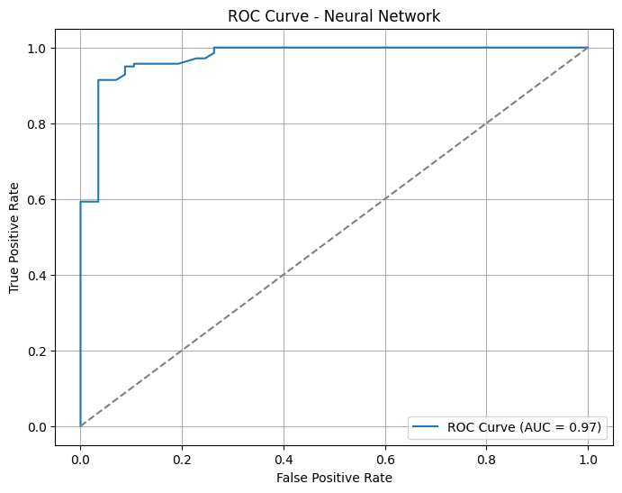

📈 StandardScaler Features
The goal of this model is to classify companies as financially weak (class 0) or financially strong (class 1) based on financial ratios, using a neural network trained on standardized features.
Standard Scaling:
StandardScaler().fit_transform() on X_trainStandardScaler().transform() on X_testThis ensured that both training and test sets were standardized consistently using only training statistics.
MLPClassifier| Class | Precision | Recall | F1-score | Support |
|---|---|---|---|---|
| 0 (Weak) | 0.94 | 0.81 | 0.87 | 57 |
| 1 (Strong) | 0.93 | 0.98 | 0.95 | 140 |
| Predicted Weak | Predicted Strong | |
|---|---|---|
| Actual Weak | 46 | 11 |
| Actual Strong | 3 | 137 |

Interpretation: The near-perfect AUC confirms the model’s excellent ability to distinguish between weak and strong companies across all thresholds.
This version of the neural network—trained on standardized features—achieved the best overall performance among all tested models.